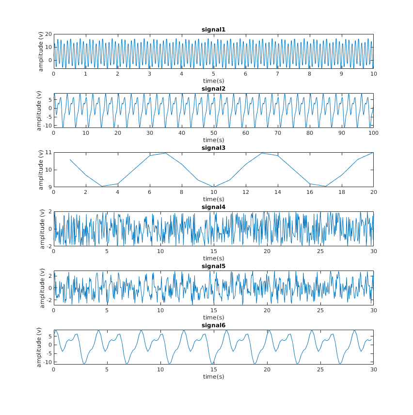
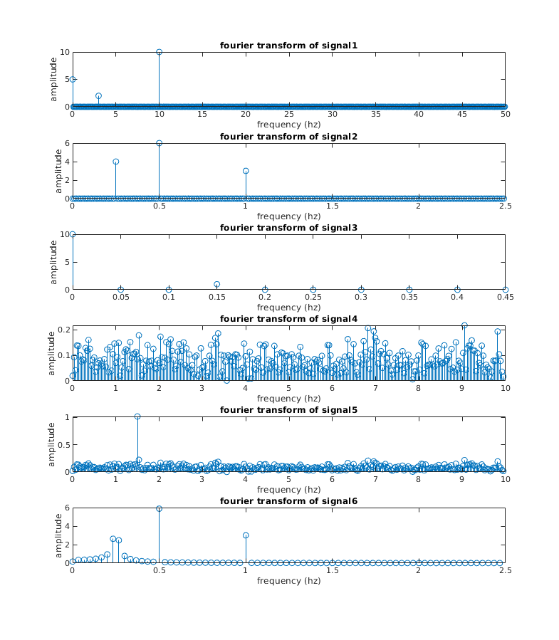
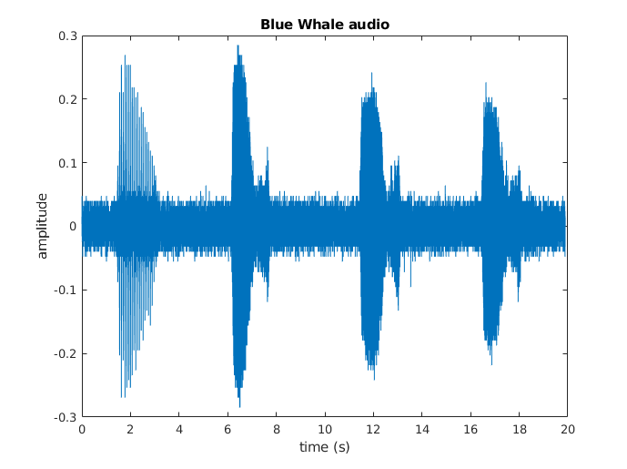
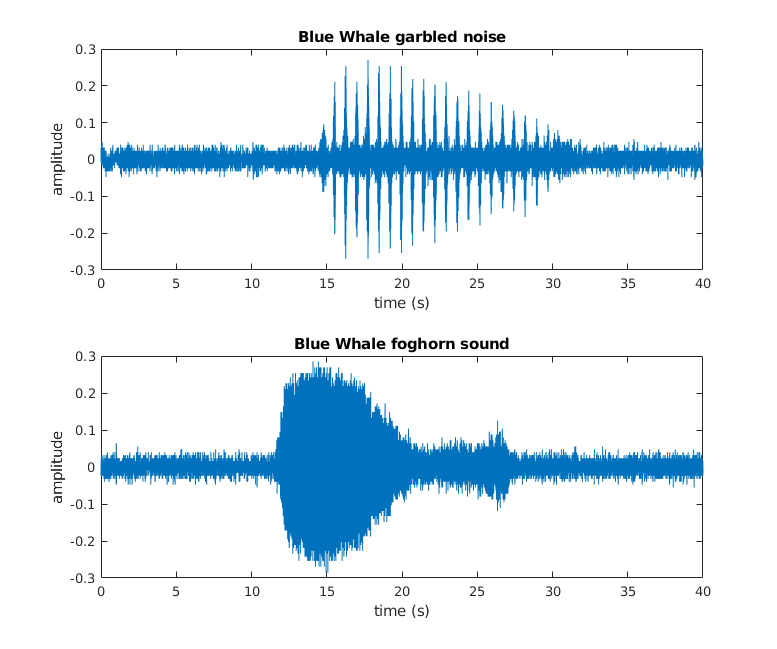
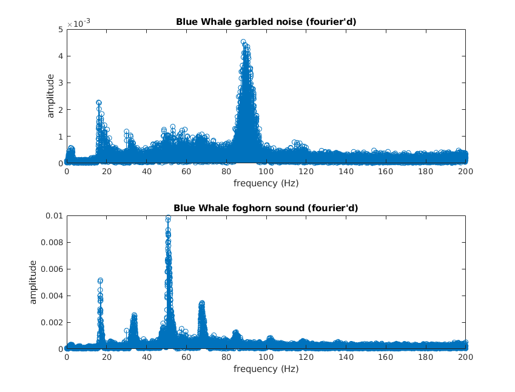

Assignment 4 - Dimitar Dimitrov - s1018291
4.4 Fast Fourier Transform
load ("fourier_practicesignals.mat"); iter = 1:6; for i=iter subplot(6,1,i); subplot(length(iter),1,i); plot(eval(['t' num2str(i)]), eval(['y' num2str(i)])); title(strcat('signal ', num2str(i))); xlabel('time(s)'); ylabel('amplitude (v)'); end
signals 1,2,3 and 6 seem to be periodic, so we can probably analyze them and predict where maximums/minimums occur, while signals 4 and 5 seem to have too much noise/randomness to see a pattern, at least at first sight
Fss=zeros(1,6); ns=zeros(1,6); for i=iter ttemp = eval(['t' num2str(i)]); Fss(i) = 1/ ( ttemp(2)-ttemp(1) ); ns(i) = length(ttemp); end disp(Fss); disp(ns); % fs1 = 100hz n1 = 1000 samples range1=0:50hz % fs2 = 5hz n2 = 500 samples range2=0:2.5hz % fs3 = 1hz n3 = 20 samples range3=0:0.5hz % fs4 = 20hz n4 = 601 samples range4=0:10hz % fs5 = 20hz n5 = 601 samples range5=0:10hz % fs6 = 5hz n6 = 150 samples range6=0:2.5hz for i=iter subplot(6,1,i); subplot(length(iter),1,i); [t, y] = fourier_transform(eval(['t' num2str(i)]), eval(['y' num2str(i)])); stem(t,y); title(strcat('fourier transform of signal ', num2str(i))); xlabel('frequency'); ylabel('amplitude'); end
f. peaks:
- signal 1: @ 3hz and @ 10hz
- signal 2: @ 0.25hz, 0.5hz and 1hz
- signal 3: @ 0.15hz
- signal 4: tons of different frequencies, highest peak right below 7hz
- signal 5: tons of different frequencies, but clear high peak at 1.5hz
- signal 6: big peaks at 0.5hz and 1hz, but also surprisingly many peaks between 0hz and 0.5hz
conclusion: predictions match outcomes (except maybe 5, granted surprisingly clear outcome (minus the low amplitude noise)
g
technically if you look at the first element of every amplitude array none of them are zero, [5, 7.5033e-15, 10, 0.0203, 0.0186, 0.1684], the 2nd signal has negligable amplitude of the first element, 4th, 5th and 6th are tiny. This is because that number represents the offset from the y-axis and apparently all of them are located slightly upwards from 0 (especially the 1st and 3rd signals, which oscillate respectively around 5 and 10, instead of 0)
h
in the time domain it is really hard to see, and I personally could not detect the additional sine. In the frequency domain though, it is an bvious huge peak at 1.5hz, while the noise looks like tons of tine spikes all over the place (uniform)
i
the smaller amount of samples seems to introduce insecurity/variability, since signal 6 seems to be picking up a few extra spikes around 0.25hz that aren't present in signal 2. (later we find out this is actually spectral leakage)
4.5 spectral leakage
freq = 20hz
a
number of samples
n = 100: step size: 20/100 = 0.2hz -> we will get a leak because 2.5hz won't be covered - closest values we can cover are 2.4hz and 2.6hz n = 160 step size: 20/160 = 0.125hz -> we won't get a leak because 2.5hz is covered - 20x 0.125hz = 2.5hz n = 250 step size: 20/250 = 0.08hz -> we will get a leak because 2.5hz won't be covered - closest values we can cover are 2.48 and 2.56
measurement time
measurement time: T = 1s n = 1s * 20hz = 20 samples step size: 20/20 = 1hz -> we will get a leak because 2.5hz won't be covered - closest values we can cover are 2hz and 3hz T = 2.4s n= 2.4s * 20hz = 48 samples step size = 20/48 = 0.417hz -> we will get a leak because 2.5hz won't be covered - closest values we can cover are 2.502 and 2.085 T = 5s n = 5 * 20hz = 100 samples step size = 20/100 = 0.2 -> we will get a leak because 2.5hz won't be covered - closest values we can cover are 2.4hz and 2.6hz
b.
fs = 50hz, T =2s, n = 50*2 = 100 samples, step size = 50/100 = 0.5 hz fs = 50hz, T =5s, n = 50*5 = 250 samples, step size = 50/250 = 0.2 hz fs = 50hz, T =20s, n = 50*20 = 1000 samples, step size = 50/1000 = 0.05 hz
4.6 whale sounds
[bw, fs] = audioread("bluewhale.au"); dt=1/fs; t = 0:dt:(length(bw) -1) * dt; plot(t, bw); xlabel('time (s)'); ylabel('amplitude'); title('Blue Whale audio'); %sound(bw, fs);
soundA = bw(1:4*fs); soundB = bw(5*fs:9*fs - 1); ogFs = 0.1*fs; ogdt = 1/ogFs; t = 0:ogdt:(length(soundA) -1) * ogdt; subplot(2,1,1); plot(tA, soundA); xlabel('time (s)'); ylabel('amplitude'); title('Blue Whale garbled noise'); subplot(2,1,2); plot(tB, soundB); xlabel('time (s)'); ylabel('amplitude'); title('Blue Whale foghorn sound');
[rangeA, ampA, nyqA] = fourier_transform(t, soundA); [rangeB, ampB, nyqB] = fourier_transform(t, soundB); disp(['nyquist frequency of soundA: ', num2str(nyqA)]); disp(['nyquist frequency of soundB: ', num2str(nyqB)]);
nyquist frequency of soundA: 200 nyquist frequency of soundB: 200
I decided to work with the original sampling frequency and the nyquist frequency of the original sound is 200hz. If you use the frequency given by the file (4000hz), the nyquist frequency is 2000hz (factor 10 of original values)
subplot(2,1,1); stem(rangeA, ampA); xlabel('frequency (Hz)'); ylabel('amplitude'); title('Blue Whale garbled noise (fourier''d)'); subplot(2,1,2); stem(rangeB, ampB); xlabel('frequency (Hz)'); ylabel('amplitude'); title('Blue Whale foghorn sound (fourier''d)'); % sound B has clearer, louder and more peaks than soundA